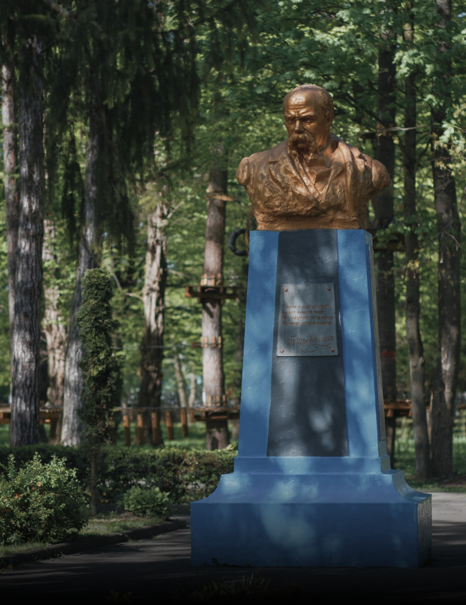
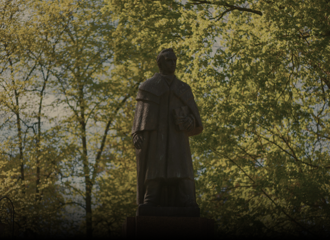

Visit the beautiful places of the ancient TOWN of Stanislaviv
IVANO - FRANKIVSK
Buildings, museums, monuments and outher historical values in on of the most ancient city, descendant of the Stanislaviv


Taras Hryhorovych Shevchenko, also known as ‘Kobzar Taras’, or simply Kobzar , was a Ukrainian poet, writer, artist, public and political figure, folklorist and ethnographer. His literary heritage is regarded to be the foundation of modern Ukrainian literature and, to a large extent, the modern Ukrainian language though it is different from the language of his poems. Shevchenko is also known for his many masterpieces as a painter and an illustrator.
Stansmith holidays
on which blacksmiths presented statues of the city


TOWN HALL
cituated in a very center of a city
MUSEUMS
Memories and history